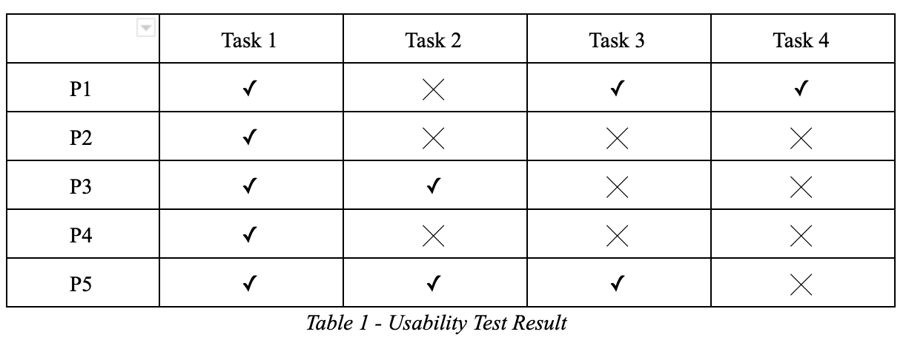

Since its inception, SOO has grown tremendously, providing a wide range of new services. These services are, however, poorly represented on the website due to inextensible information architecture that was used to build the site. The IA of the main website suffers from various problems:
We chose to conduct a semi-structured interview with SOO staff members because it encourages two-way communication which will allow informants the freedom to express their views.
Findings:
We selected five participants who represent the potential users of the main website to conducta a usability test. Compared to the interview participants, these five participants have limited knowledge about SOO and their website. Such participant profile would help us to analyze the behaviour of less frequent users of the website.
Result:
Findings: